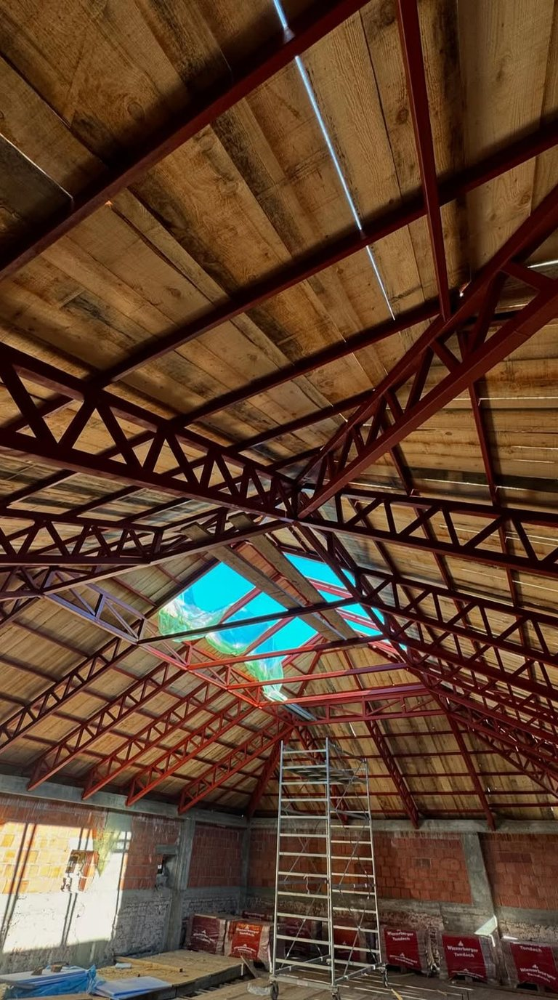

Raspon usluga
Mera → izrada → montaža
Ceo posao pod jednim krovom. Jedna odgovornost i jedan sagovornik.

Izlazimo na teren, merimo, izrađujemo u sopstvenoj radionici i montiramo svojom ekipom. Jedan sagovornik od prvog poziva do skidanja zaštitne folije.
O nama
Mera → izrada → montaža
Ceo posao pod jednim krovom. Jedna odgovornost i jedan sagovornik.
Kragujevac ·
Šumadija i centralna Srbija
Izlazak na teren i procena su besplatni.
Ugostiteljstvo · firme · privatna lica
Od maske za klima uređaj do noseće krovne konstrukcije i hale.
Usluge

Krovne, međuspratne i platforme. Veliki otvoren prostor bez stubova nasred prostorije.
Obim posla:
Ulaz koji radi svaki dan bez zapinjanja i granica placa koja izgleda završeno.
Obim posla:

Bezbedan i miran hod. Protivpožarno stepenište je uslov za upotrebnu dozvolu.
Obim posla:

Više stolova i gost koji sedi po kiši i zimi. Bašta se vraća kroz jednu sezonu.
Obim posla:
Kako radimo
Bez improvizacije, svaki korak je jasan unapred.
Upit
Recite šta, gde i za kada. Izlazimo na lokaciju i merimo na licu mesta.
Ponuda
Ponuda je raspisana stavku po stavku: materijal, zaštita, rok i cena. Rok stoji u ponudi, ne dogovara se usput.
Realizacija
Najveći deo posla ide u radionici na Avalskoj. Na objekat izlazimo sa gotovim elementima, pa je vreme kod vas kratko.
Predaja
Montiramo, čistimo za sobom i predajemo posao. Kad kroz godinu dana zapne, vraćamo se na svoj rad.

Rezultati
Od maske za klimu do zatvorene bašte i hale. Objekti završeni i predati.
Radionica na Avalskoj radi od 2018. Četvoro ljudi, oprema i sopstvena ekipa iza svakog posla.
Ugostiteljstvo, firme i privatna lica. Od dvorišne kapije do objekta sa projektom.
Radovi
Česta pitanja
Najveći deo se radi u radionici, pa je vreme na vašem objektu kratko. Rok zavisi od posla i njegovog obima, a upisujemo ga u ponudu, ne dogovaramo ga usput.
Zavisi isključivo od pripreme. Radimo čišćenje, osnovnu zaštitu, pocinkovanje ili plastifikaciju i završne nanose. Pogledajte radove od pre nekoliko godina, stoje. Na antikorozivnu zaštitu dajemo garanciju od dve godine.
Da vam ne bismo lupali cenu preko telefona, treba nam troje: šta, koje dimenzije i gde. Za orijentaciju odmah kažemo opseg po metru, a tačna cena ide posle izlaska na teren. Izlazak i procena su besplatni.
Radimo, od maske za klima uređaj do hale. Mala stvar danas je često prvi posao od nekoliko.
Radionica je na Avalskoj 11 u Kragujevcu. Baza nam je Kragujevac i Šumadija, a izlazimo na teren širom centralne Srbije: Grivac, Kutlovo, Sušica, Kosmaj.
Za konstrukcije, protivpožarna stepeništa i veće objekte radi se po projektu. Radimo sa vašim projektantom ili vas uputimo na saradnika. Naš deo je izrada i montaža. Po završenom poslu dobijate račun; atest i izjavu izvođača, ako ih objekat traži, pribavlja projektant.
Kontakt
Čitamo svaki upit lično. Opišite posao, izlazimo na teren i merimo, pa dobijate raspisanu ponudu. Izlazak i procena su besplatni.
{kind=link}
{kind=link}
{kind=link}
{kind=link}
{kind=link}